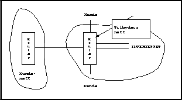

Et fast samband vil være basert på faste linjer fra Televerket. Mellom
tilbyders infrastruktur og kundens nett knyttes telelinjen sammen med
to såkalte routere, slik figur  viser.
viser.

Med en slik tilknytning er kunden et fullverdig medlem av Internettet og har altså en fast TCP/IP forbindelse døgnet rundt. Behovet for båndbredde vil avgjøre hvor rask rask linje kunden abonnerer på. Vanlige hastigheter kan være 64 Kbps, 128 Kbps og 2Mbs.